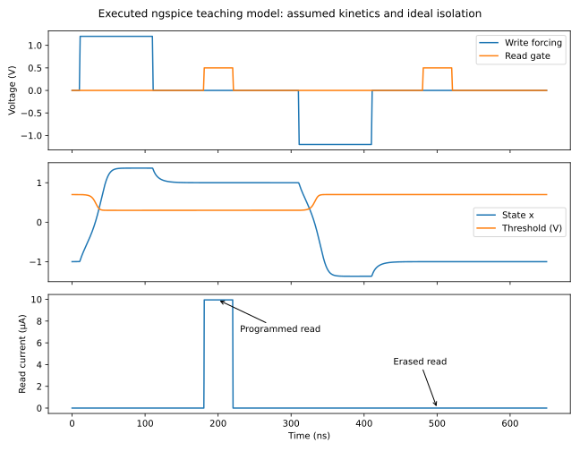

Evidence gate · established before model selection
What can actually be reproduced?
The delivered circuit work is an illustrative teaching model, including a reproduction of published static equations. It is neither an author-provided compact-model reproduction nor a calibrated reconstruction of a complete measured FeFET. Static equations can be checked accurately; switching kinetics, retention, endurance, and access energy cannot be inferred from them.
Acquisition and selection
The search covered official profiles, indexed lab publications, Crossref, OpenAlex, arXiv, publisher supplements, and Georgia Tech theses. The main laboratory and center publication pages could not be fetched directly. No complete author SPICE/Verilog-A card, baseline transistor deck, and matched calibration dataset were verified. This is a search outcome, not a claim that none exists.
The selected foundational source is Wang et al., Scientific Reports, 2021, DOI 10.1038/s41598-021-91492-w. PDF p. 2 supplies the branch equations; p. 3 Figure 2 uses a synthetic capacitor with saturation polarization 14 µC/cm², remanence 13 µC/cm², coercive field ±1 MV/cm, background relative permittivity 33, and thickness 10 nm. The supplement adds extraction details, not a complete simulator deck. Chapter 3 reproduces this well-defined mathematical example and uses newly generated, labeled noise to study identifiability.
The closer device-level route is Wang's thesis, PDF pp. 49–54, §3.3, linked to TED 2022. Its empirical screening/leakage model describes a p-channel Si FeFET with 5 nm ZrO₂ and 1.5 nm SiO₂, 30 µm width and 8 µm length, read drain bias −50 mV, and 10 µs programming pulses at 3.4 V and −7 V. Those values are kept separate from the synthetic 10 nm capacitor. A full baseline transistor calibration, complete current prefactor, raw traces, and executable implementation remain unavailable here.
Capability by observable
| Observable | What is supported | What is missing |
|---|---|---|
| Static major branches | Published equations reproduced in Python and ngspice; analytic limiting cases and solver comparison. | No new measured-device fit; sampled synthetic branch values are not digitized measurements. |
| Minor loops | Published extraction and history concepts explained. | No validated arbitrary-history Preisach operator or full minor-loop simulator delivered. |
| Transient programming/read | Assumed double-well state equation, pulses, ideal read separation, timestep and independent-solver comparison. | Measured kinetics, nucleation distribution, realistic access devices and voltage drivers. |
| Retention | Illustrative Arrhenius/hazard calculation; research evidence discussed separately. | Same-stack measured time/temperature distributions and validated extrapolation mechanism. |
| Endurance and variability | Synthetic Gaussian errors, binomial word errors, ideal wear analysis; fault injection in RTL. | Measured cycling evolution, spatial/temporal correlations, tail distributions and failure criteria. |
| Temperature | Teaching sensitivity and sourced process-temperature distinction. | A validated temperature-dependent compact model. |
| Energy | Static loop energy density and separately assumed array/system budgets. | Calibrated terminal-power integration for complete program/read operations. |
Parameter ledger: value, units, provenance, uncertainty, and status. The capstone's coupling and cost assumptions are additionally declared in its source and result JSON. They are not extracted from the materials papers.
Executed circuit validation
Static netlist uses ngspice behavioral expressions to encode displacement versus field. It is an equation-check circuit, not a charge-conserving dynamic ferroelectric capacitor. Transient netlist stores a normalized state using a behavioral current and capacitor. The state is mathematical, with an assumed 20 ns relaxation time. Neither netlist requires Verilog-A compatibility.
The simulator is ngspice 47. Static Python/SPICE maximum absolute discrepancy is about 1.39 × 10⁻¹⁶ C/m². A default-tolerance discrepancy was repaired by tightening solver tolerances. The transient test resolves positive and negative states; the illustrative read currents are about 9.95 µA and zero. Halving maximum timestep changes state by at most 1.05 × 10⁻⁴; comparison with an independently executed numerical ODE solver differs by at most 1.41 × 10⁻⁴. These are implementation checks, not empirical validation. Machine-readable evidence.

Digital and physical boundary
The synthesizable controller and separate behavioral memory pass RTL and generic synthesized-netlist simulation in Icarus Verilog 12 and Yosys 0.33. This validates the tested handshake, latency, reset, and fault behavior. Generic synthesis supplies no foundry area, clock-frequency, power, or timing signoff.
No compatible research-device PDK, ferroelectric bitcell rule set, calibrated macro timing/power view, or extraction deck was available. Conventional open-process documentation does not make this HZO/ZrO₂ research stack a supported device. Consequently the course supplies conceptual cross-sections, cell/array diagrams, abstract floorplanning and placement studies, and editable LEF/GDS views. A Liberty file is not fabricated: no downstream characterized timing flow requires one in this demonstrator, and its numerical tables would otherwise be invented.
The GDS contains a macro outline and 128 symbolic cells, with arbitrary layer numbers. It is an abstract drawing, not mask-ready bitcell layout. There is no claim of detailed placement/routing, clock-tree synthesis, foundry DRC, LVS, parasitic extraction, static timing signoff, or post-layout simulation. Completing those requires process-supported conventional cells plus a characterized custom memory macro and the corresponding rule/model decks.
Exact next data requests
For a calibrated reconstruction, obtain the same-stack raw major/minor polarization loops with leakage separation; transfer and output curves across program states; full geometry and baseline transistor parameters; complete compact-model equations and initial conditions; pulse waveforms and read delays; transient current/charge measurements; temperature/cycling/retention distributions; and reuse permissions for model/data files. For author-model reproduction, request the actual simulator version, deck, model card or Verilog-A source, extraction scripts, and expected reference outputs. For fabrication work, add layer definitions, design rules, parasitic decks, qualified devices, macro views, reliability limits, and integration instructions.
These are prepared questions, not messages sent to the authors. A useful request would name the TED 2022 device and ask specifically for the current-prefactor and transistor-calibration inputs needed to reproduce §3.3, avoiding a vague request for “all code.”